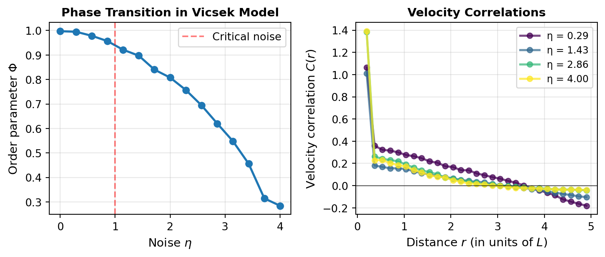

Code
import numpy as np
import matplotlib.pyplot as plt
from scipy.spatial.distance import pdist, squareform
# Vicsek model parameters
N = 500 # number of particles
L = 10.0 # box size (periodic boundary conditions)
v0 = 1.0 # speed
R = 1.0 # interaction radius
dt = 0.1 # time step
T_equil = 100 # equilibration time
T_measure = 100 # measurement time
noise_levels = np.linspace(0.0, 4.0, 15)
def vicsek_step(pos, vel, noise, L, R, v0):
"""Perform one Vicsek update step"""
N = len(pos)
# Compute pairwise distances (with periodic boundaries)
dpos = pos[:, np.newaxis, :] - pos[np.newaxis, :, :]
dpos = np.where(np.abs(dpos) > L/2, L - np.abs(dpos), np.abs(dpos))
dist = np.sqrt(np.sum(dpos**2, axis=2))
# Find neighbors (including self)
neighbors = dist < R
# Update velocity: average angle of neighbors plus noise
angle_vel = np.arctan2(vel[:, 1], vel[:, 0])
for i in range(N):
neighbor_angles = angle_vel[neighbors[i]]
avg_angle = np.arctan2(
np.mean(np.sin(neighbor_angles)),
np.mean(np.cos(neighbor_angles))
)
new_angle = avg_angle + (np.random.rand() - 0.5) * noise
vel[i] = v0 * np.array([np.cos(new_angle), np.sin(new_angle)])
# Update position
pos = pos + vel * dt
# Periodic boundary conditions
pos = pos % L
return pos, vel
# Initialize arrays for storing results
order_param = np.zeros(len(noise_levels))
corr_funcs = []
for idx, noise in enumerate(noise_levels):
# Initialize positions uniformly, velocities isotropically
pos = np.random.rand(N, 2) * L
angle = np.random.rand(N) * 2 * np.pi
vel = v0 * np.array([np.cos(angle), np.sin(angle)]).T
# Equilibration
for _ in range(T_equil):
pos, vel = vicsek_step(pos, vel, noise, L, R, v0)
# Measurement
all_correlations = []
for t in range(T_measure):
pos, vel = vicsek_step(pos, vel, noise, L, R, v0)
# Compute order parameter
mean_vel = np.mean(vel, axis=0)
order = np.linalg.norm(mean_vel) / v0
order_param[idx] += order / T_measure
# Compute velocity correlation function
# Subtract mean velocity
vel_fluct = vel - np.mean(vel, axis=0)
# Compute pairwise distances
dpos = pos[:, np.newaxis, :] - pos[np.newaxis, :, :]
dpos = np.where(np.abs(dpos) > L/2, L - np.abs(dpos), np.abs(dpos))
dist_sq = np.sum(dpos**2, axis=2)
dist = np.sqrt(dist_sq)
# Compute velocity dot products
vel_dot = np.sum(vel_fluct[:, np.newaxis, :] * vel_fluct[np.newaxis, :, :], axis=2)
# Bin by distance
r_bins = np.linspace(0, L/2 - 0.1, 30)
for i in range(len(r_bins)-1):
mask = (dist >= r_bins[i]) & (dist < r_bins[i+1])
if np.sum(mask) > 0:
# Normalize by velocity variance
var_vel = np.mean(vel_fluct**2)
corr = np.mean(vel_dot[mask]) / var_vel if var_vel > 0 else 0
all_correlations.append((np.mean([r_bins[i], r_bins[i+1]]), corr))
# Average correlations over time and bin by distance
if all_correlations:
all_correlations = np.array(all_correlations)
unique_r = np.unique(all_correlations[:, 0])
corr_by_r = []
for r in unique_r:
corr_by_r.append(np.mean(all_correlations[np.abs(all_correlations[:, 0] - r) < 0.01, 1]))
corr_funcs.append(np.array(corr_by_r))
# Create plots
fig, axes = plt.subplots(1, 2, figsize=(8, 3.5))
# Left panel: Order parameter vs noise
axes[0].plot(noise_levels, order_param, 'o-', color='#1f77b4', linewidth=2, markersize=6)
axes[0].axvline(x=1.0, color='red', linestyle='--', alpha=0.5, label='Critical noise')
axes[0].set_xlabel(r'Noise $\eta$', fontsize=11)
axes[0].set_ylabel(r'Order parameter $\Phi$', fontsize=11)
axes[0].set_title('Phase Transition in Vicsek Model', fontsize=11, fontweight='bold')
axes[0].grid(True, alpha=0.3)
axes[0].legend()
# Right panel: Correlation functions
colors_corr = plt.cm.viridis(np.linspace(0, 1, 4))
selected_indices = [1, 5, 10, 14] # Sample a few noise levels
for plot_idx, noise_idx in enumerate(selected_indices):
if noise_idx < len(corr_funcs) and len(corr_funcs[noise_idx]) > 0:
r_centers = np.linspace(0.2, L/2 - 0.1, len(corr_funcs[noise_idx]))
axes[1].plot(r_centers, corr_funcs[noise_idx], 'o-',
color=colors_corr[plot_idx],
label=f'η = {noise_levels[noise_idx]:.2f}',
linewidth=2, markersize=5, alpha=0.7)
axes[1].set_xlabel(r'Distance $r$ (in units of $L$)', fontsize=11)
axes[1].set_ylabel(r'Velocity correlation $C(r)$', fontsize=11)
axes[1].set_title('Velocity Correlations', fontsize=11, fontweight='bold')
axes[1].grid(True, alpha=0.3)
axes[1].legend(fontsize=9)
axes[1].axhline(y=0, color='black', linestyle='-', linewidth=0.5)
plt.tight_layout()
plt.savefig('vicsek_correlations.png', dpi=300, bbox_inches='tight')
plt.show()
#print(f"Order parameter at η=0: {order_param[0]:.3f}")
#print(f"Order parameter at η=2.0: {order_param[np.argmin(np.abs(noise_levels - 2.0))]:.3f}")